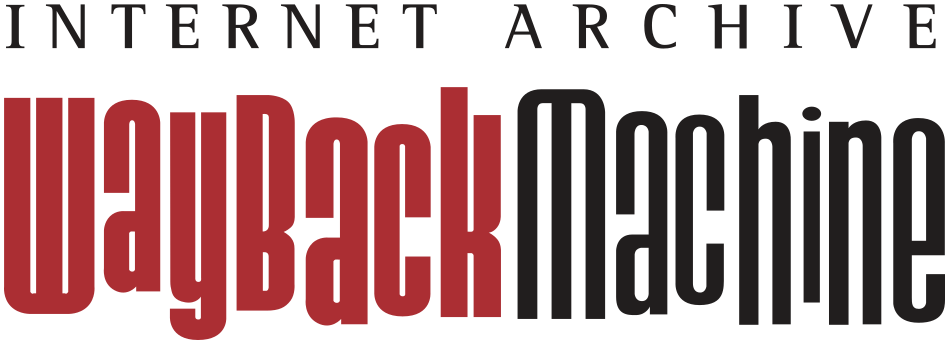

我在网上修文物: 互联网考古记录
笔者在搜集中国LLM发展资料的时候，发现即使是三四年前的互联网资料都难以检索。特书此文。
引子
在几几还不会年年的时候的自己看过的几年前的资料现大多已经散佚了：你也许能查到两年前的天气，但是已经很难查到两年前的今天的B站日榜第一是什么了，更别提两年前的今天你撸了多少次管。当然最后一个纯个人性的信息只能靠自己记录来解决，但是网上的东西还是有别人记录过的。
两种古
互联网的考古有两种古，一种是古而不移，之前有人放在那里了，就不动了，后来要么是无人问津要么是被隐蔽地删除了；另一种是忒修斯之船，古的东西被新的东西覆盖了。幸好这两种古都可以通过归档的手段进行存储。
Wayback Machine
Explore more than 1 trillion web pages saved over time
Wayback Machine 存储了非常多的互联网资料，特别适合查找一些过往资料。 但是 archive 机制不明，对于一些并不冷门但可能存放于私域流量平台上的网页没有 archive.
btw, 现在的英语高考卷A题还在用上古网站的排版。去参观一下上古网站的排版就知道我在说啥了。https://web.archive.org/web/19970304041045/http://ubl.com/
搜索引擎
Google，Bing，DuckDuckGo 都是可以制定特定时间范围的，
另外提一嘴已经成为棍母的搜索引擎快照，先是百度停了，后是 Google 停了，这无疑是对互联网考古的一大打击。
私域流量平台
私域流量平台，包括 X、哔哩哔哩、贴吧、小红书、微信、知乎都是极大的富矿。但是据我所知这几家平台的检索机制就没有一个正常的，在这些平台上检索内容十分费劲，需要通过各种巧思来检索到几年前的内容。
AI 搜索供应商
很遗憾的是 EXA 这个 AI 搜索供应商降低了老旧信息的权重，导致我让 Agent 搜索几年前的消息时特别费劲。
关于 AI 搜索供应商，本来“获取信息”应该是 Agent 构建的非常重要的一环，但是长期以来并没有任何话题关注度。
Comments